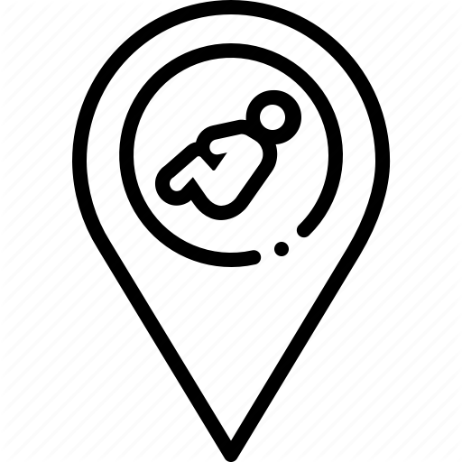

I wast born in Jaghoori district in Ghazni province of Afghanistan in 02 April 1994

Studied Computer Science at Computer Science faculty of Kabul Polytechnic Universtiy, the top engineering university of Afghanistan. And Graduated in Dec, 2018

Joined NavGurukul Foundation to study and add more to my Software Engineering knowledge

Started school in 2002 and finished high school in 2013 in Sultani High School, Jaghoori, Ghazni, Afghanistan

The first semester at Kabul Polytechnic University with my classmates

With NavGurukul students helping Himachal Pradesh state of India people to cultivate rice

With my brother in Qargha recreational place in Kabul

Kabul Polytechnic University, where I could learn and explore new things regarding the science specially computer science

Teaching and Learnig and English language at Jaghoori, I finished an English language program here

A summer picnic with my classmates from Kabul Polytechnic University in Saalang

From right: me, Ataurahman, Parwin, and Sakina at Shuhada Organization office

After a rainy day at Kabul Polytechnic University compus